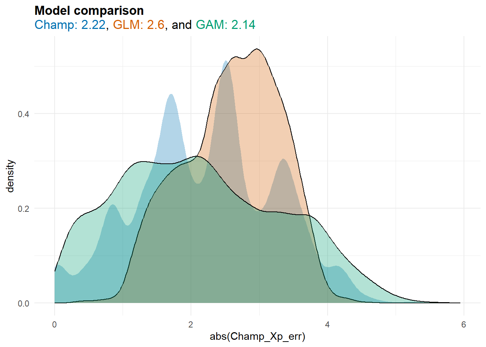
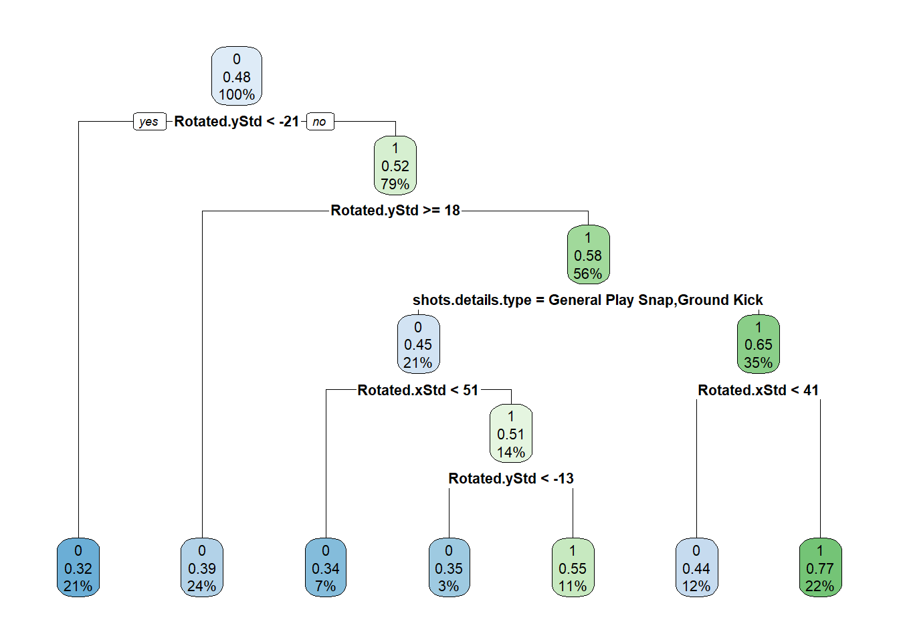
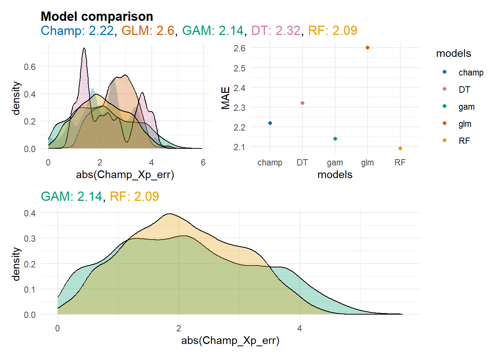
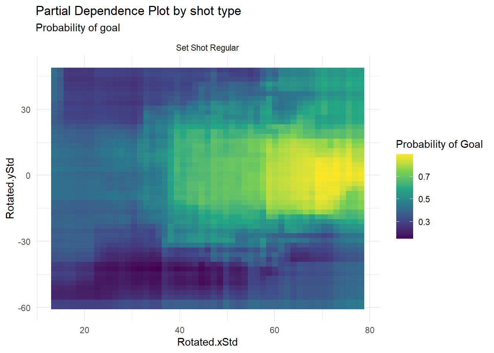
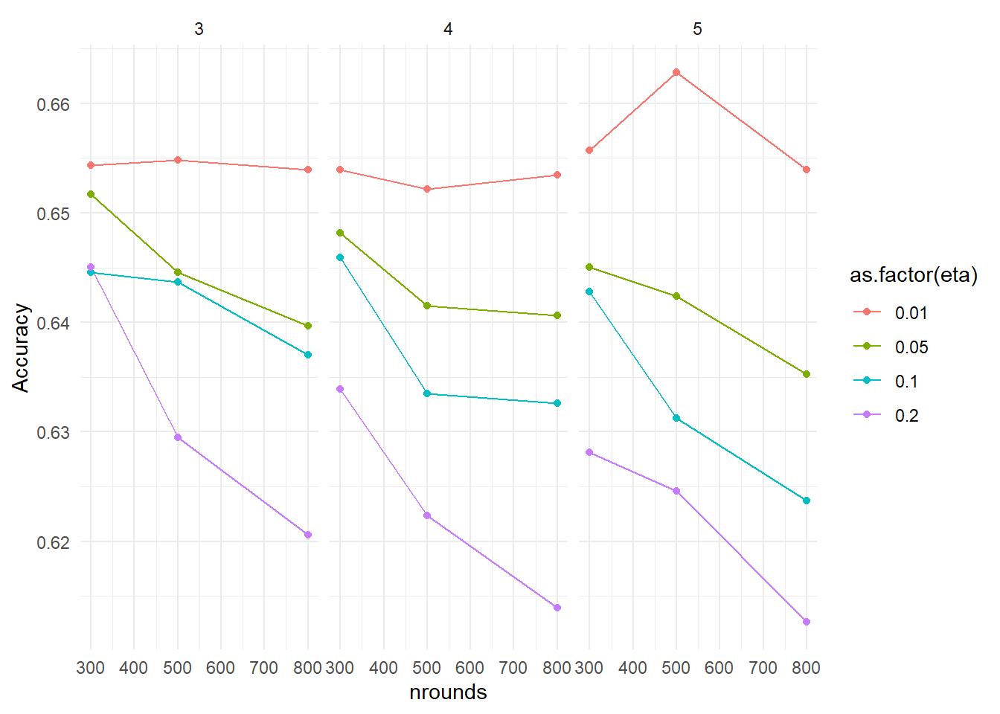

5 Module 4
5.1 Recap from last module
We explored our ability to predict shot success compared to what Champion provides. We primarily did this through the lens of the generalized linear model (GLM) framework. The key strength of the GLM framework is its ability to represent models in a “linear” form even when estimating the effect on a binary variable (goal, miss), a count variable (number of disposals), or a range of other types of outcome distributions that don’t follow a normal distribution.
As the GLM framework is still linear, we can interpret the coefficients using standard hypothesis testing procedures (e.g., p-values). Additionally, with a bit of extra effort, we can extend the GLM framework further to allow for non-linear effects (we did this using the GAM model) and also situations where we violate the independence assumption. This final point can be achieved using mixed effects models, where you effectively let the model know that some observations will be clustered within players or teams, etc.
In research settings, you can see how the above type of modeling procedure can be quite attractive. We can make inferences about effects within a relatively flexible framework, provided that certain assumptions about the modeling procedure are met
5.2 Goals for this week.
Our current outline for the next out weeks looks like the below.
Introduction into R programming language and getting started with some descriptive statistics.
Understanding key terms; Exploratory analysis, Supervised vs Unsupervised problems, regression vs classification, prediction vs association.
A quick note on distributions - Supervised regression and classification problems using a generalized linear model framework. (Hypothesis testing)
Machine learning approach to Supervised learning
Methods of assessing model accuracy
Bias - variance trade-off, Feature selection, hyper-parameter tuning. (this may get blended in with 5)
Unsupervised learning strategies (cluster analysis, PCA, market basket analysis)
Creating a machine learning pipeline
5.3 Machine learning approach to supervised learning
5.3.1 Some quick context
What makes a “machine learning” model?
Great question!! With no definitive answer. Technically, the GLM framework above could be considered a machine learning model, and indeed, many papers have referred to things such as logistic regression as machine learning.
From an operational perspective, I like to think of it more along the lines of models that either focus on making reliable inferences about the variables used to predict an outcome (e.g., goal or miss, score differential) or models where the focus is more on the prediction itself, with less concern about how the prediction was made. (This is a very generalized statement)
Put differently, some models will significantly relax their assumptions to find clever ways to better fit the data. This relaxation of assumptions makes it harder for us to know exactly what has happened under the hood. For example, in a linear model, I effectively tell the model that I assume the effect to be “linear,” which constrains the model to this rule. This makes it easier for us to interpret but not very flexible.
Last week, when we used the GAM model to fit the shot data, we were effectively fitting a model that allowed us to look for non-linear effects. The easiest way to learn about these potential non-linear effects was to plot them*. Now, imagine a situation where we believe there might be interactions between different variables, some of which may be linear or non-linear, and we don’t really know in advance. It would be beneficial to have models that can potentially identify these interactions for us, and some of those models are what we are going to explore today
*Note it is still possible to do hypothesis testing on the non-linear effects with GAMS but plotting effects is really the only way to understand the non-linear effects.
5.3.2 What is an interaction effect?
We can notice here some different effects, but lets say the effects might be even more complicated.
Now imagine that whether the effect was linear, non-linear or linear dependent on other variables as well. Hopefully, you can see how quickly this can get quite complex to model with a simple linear model.
For example see this example below taken from https://link.springer.com/article/10.3758/s13428-024-02389-1
Where they are looking at factors that impact science ability over time. These factors include SES (Socio Economic Status), GMOTOR (Gross motor skills) and INTERN (internalization problems).
5.4 Enough talking lets do some machine learning
Today the main models we are going to explore are the Decision Tree and Random Forest Algorithm. Lets have a quick look at where these algorithms sit on the conceptual model map from the ISLR book.
The decision tree is perhaps considered one of the most interpretable machine learning algorithms in that you can just traverse a tree to get explanations of expected values (more on this in a second). As always, there is no free lunch and decision trees often are extremely sensitive to initial conditions and can vary a lot with small perturbations in the data. This link visualizers what I am talking about https://mlu-explain.github.io/decision-tree/.
This subsequently, reduces there performance on hold out data set and makes decision trees not necessarily the best option from a predictive standpoint.
We will go over how to use them anyway, as there may be an occasion where the difference in performance between a more complicated model and a decision tree is trivial enough that you choose to go with a model that is more easily interpreted. Or If you are relative confident that the key variables are the same between models, you may use the decision tree as a point of illustration but know that in the back ground you are using a better performing model.
5.5 Load data and packages
pacman::p_load(data.table,tidyverse,caret,mgcv,ggtext,
rpart,rpart.plot,pdp,party,ranger,glue,patchwork)
urlfile="https://raw.githubusercontent.com/R2mu/GWS_DSPR/main/data/mod2data.csv"
data1 <- fread(urlfile)
urlfile2="https://raw.githubusercontent.com/R2mu/GWS_DSPR/main/data/shotdata.csv"
data2 <- fread(urlfile2)
data2 <- data2|>
rename(Rotated.xStd=shots.details.locationRotated.xStd,
Rotated.yStd=shots.details.locationRotated.yStd)
shot_small <- data2%>%
filter(Rotated.xStd>(-20))|>
mutate(Shot_outcome = as.factor(ifelse(shots.result.code=="G",1,0)),
Champ_Xp_err = round(shots.result.points-shots.result.pointsExpected,3))
shot_small$shots.player.displayName<-as.factor(shot_small$shots.player.displayName)
shot_small$shots.details.type<-as.factor(shot_small$shots.details.type)We will continue to focus on what we explored last week and see if these machine learning models can help do a better job than what we achieved last week. Lets quickly recap where we got to last week.
## simple logistic regression model
m1 <- glm(Shot_outcome~Rotated.xStd+Rotated.yStd,
data = shot_small,
family = binomial)
##
m2 <- bam(Shot_outcome~te(Rotated.xStd,Rotated.yStd,by=shots.details.type)+
s(shots.player.displayName,bs="re"),
family = binomial,
nthreads=8,
discrete = T,
data = shot_small ,method = "fREML")shot_small <- shot_small|>
mutate(xG_m1 = predict(m1,type="response")*6,
xG_m2 = predict(m2,type="response")*6,
glm_Xp_err = round(shots.result.points-xG_m1,3),
gam_Xp_err = round(shots.result.points-xG_m2,3))
MAE_champ = round(mean(abs(shot_small$Champ_Xp_err)),2)
MAE_glm = round(mean(abs(shot_small$glm_Xp_err)),2)
MAE_gam = round(mean(abs(shot_small$gam_Xp_err)),2)
ggplot(shot_small,aes(abs(Champ_Xp_err))) +
geom_density(size = 3,fill="#0072B2",alpha=.3,col=NA) +
geom_density(fill="#D55E00",alpha=.3,
shot_small, mapping=aes(abs(glm_Xp_err)))+
geom_density(fill="#009E73",alpha=.3,
shot_small, mapping=aes(abs(gam_Xp_err)))+
labs(
title = glue("**Model comparison**<br>",
"<span style='color:#0072B2;'>Champ: {MAE_champ}</span>, ",
"<span style='color:#D55E00;'>GLM: {MAE_glm}</span>, and ",
"<span style='color:#009E73;'>GAM: {MAE_gam}</span>")
)+
theme_minimal() +
theme(
plot.title = element_markdown(lineheight = 1.1),
legend.text = element_markdown(size = 11)
)Warning: Using `size` aesthetic for lines was deprecated in ggplot2 3.4.0.
ℹ Please use `linewidth` instead.
5.6 Decision tree
Lets create our first decision tree.
m3_dt <- rpart(
formula = Shot_outcome~Rotated.xStd+Rotated.yStd+ shots.details.type,
data = shot_small,
method = "class"
)
summary(m3_dt)Call:
rpart(formula = Shot_outcome ~ Rotated.xStd + Rotated.yStd +
shots.details.type, data = shot_small, method = "class")
n= 10886
CP nsplit rel error xerror xstd
1 0.08892714 0 1.0000000 1.0000000 0.009968954
2 0.04016064 2 0.8221457 0.8328552 0.009775323
3 0.03155479 3 0.7819851 0.8024479 0.009711314
4 0.01099637 4 0.7504303 0.7588449 0.009603362
5 0.01000000 6 0.7284376 0.7481354 0.009573871
Variable importance
Rotated.yStd Rotated.xStd shots.details.type
46 36 18
Node number 1: 10886 observations, complexity param=0.08892714
predicted class=0 expected loss=0.4803417 P(node) =1
class counts: 5657 5229
probabilities: 0.520 0.480
left son=2 (2261 obs) right son=3 (8625 obs)
Primary splits:
Rotated.yStd < -21.05 to the left, improve=139.95050, (0 missing)
Rotated.xStd < 65.05 to the left, improve= 77.49282, (0 missing)
shots.details.type splits as RLLRR, improve= 65.45643, (0 missing)
Node number 2: 2261 observations
predicted class=0 expected loss=0.3237506 P(node) =0.207698
class counts: 1529 732
probabilities: 0.676 0.324
Node number 3: 8625 observations, complexity param=0.08892714
predicted class=1 expected loss=0.4786087 P(node) =0.792302
class counts: 4128 4497
probabilities: 0.479 0.521
left son=6 (2575 obs) right son=7 (6050 obs)
Primary splits:
Rotated.yStd < 17.55 to the right, improve=124.69680, (0 missing)
Rotated.xStd < 57.75 to the left, improve= 97.15160, (0 missing)
shots.details.type splits as RLLRR, improve= 88.77016, (0 missing)
Node number 6: 2575 observations
predicted class=0 expected loss=0.391068 P(node) =0.2365423
class counts: 1568 1007
probabilities: 0.609 0.391
Node number 7: 6050 observations, complexity param=0.04016064
predicted class=1 expected loss=0.4231405 P(node) =0.5557597
class counts: 2560 3490
probabilities: 0.423 0.577
left son=14 (2274 obs) right son=15 (3776 obs)
Primary splits:
shots.details.type splits as RLLRR, improve=110.3041, (0 missing)
Rotated.xStd < 51.45 to the left, improve=106.6849, (0 missing)
Rotated.yStd < -11.75 to the left, improve= 36.7377, (0 missing)
Surrogate splits:
Rotated.xStd < 14.5 to the left, agree=0.627, adj=0.008, (0 split)
Node number 14: 2274 observations, complexity param=0.01099637
predicted class=0 expected loss=0.4538259 P(node) =0.2088922
class counts: 1242 1032
probabilities: 0.546 0.454
left son=28 (721 obs) right son=29 (1553 obs)
Primary splits:
Rotated.xStd < 51.45 to the left, improve=27.450270, (0 missing)
Rotated.yStd < -12.55 to the left, improve=16.799070, (0 missing)
shots.details.type splits as -RL--, improve= 2.128917, (0 missing)
Surrogate splits:
Rotated.yStd < 17.35 to the right, agree=0.683, adj=0.001, (0 split)
Node number 15: 3776 observations, complexity param=0.03155479
predicted class=1 expected loss=0.3490466 P(node) =0.3468675
class counts: 1318 2458
probabilities: 0.349 0.651
left son=30 (1349 obs) right son=31 (2427 obs)
Primary splits:
Rotated.xStd < 41.05 to the left, improve=188.85380, (0 missing)
Rotated.yStd < -11.75 to the left, improve= 21.76219, (0 missing)
shots.details.type splits as L--RR, improve= 18.69419, (0 missing)
Node number 28: 721 observations
predicted class=0 expected loss=0.3398058 P(node) =0.06623186
class counts: 476 245
probabilities: 0.660 0.340
Node number 29: 1553 observations, complexity param=0.01099637
predicted class=1 expected loss=0.4932389 P(node) =0.1426603
class counts: 766 787
probabilities: 0.493 0.507
left son=58 (308 obs) right son=59 (1245 obs)
Primary splits:
Rotated.yStd < -12.55 to the left, improve=19.513420, (0 missing)
shots.details.type splits as -RL--, improve=12.585550, (0 missing)
Rotated.xStd < 75.55 to the right, improve= 1.830883, (0 missing)
Node number 30: 1349 observations
predicted class=0 expected loss=0.4388436 P(node) =0.1239206
class counts: 757 592
probabilities: 0.561 0.439
Node number 31: 2427 observations
predicted class=1 expected loss=0.2311496 P(node) =0.2229469
class counts: 561 1866
probabilities: 0.231 0.769
Node number 58: 308 observations
predicted class=0 expected loss=0.3474026 P(node) =0.02829322
class counts: 201 107
probabilities: 0.653 0.347
Node number 59: 1245 observations
predicted class=1 expected loss=0.4538153 P(node) =0.1143671
class counts: 565 680
probabilities: 0.454 0.546 It is possible to read through this, but its just a lot easier to plot it instead. Here are two options.
rpart.plot(m3_dt)
This option make take a minute or two to run.
pdp_result_dt<- partial(m3_dt,
pred.var = c("Rotated.xStd","Rotated.yStd","shots.details.type"),
prob = T,
which.class = 2)
ggplot(pdp_result_dt, aes(x = Rotated.xStd, y = Rotated.yStd, fill = yhat)) +
geom_tile() +
#geom_contour(aes(z = yhat), color = "white") +
scale_fill_viridis_c(name = "Probability of Goal") +
facet_wrap(~ shots.details.type,ncol = 3) +
theme_minimal() +
labs(title = "Partial Dependence Plot by shot type",
subtitle = "Probability of goal")Hopefully the idea of how the decision tree creates Decision boundaries is clear from the photo above.
Lets see how it performed even though I already know it probably won;t beat our GAM model.
shot_small <- shot_small|>
mutate(xG_m3 = predict(m3_dt,type="prob")[,2]*6,
DT_Xp_err = round(shots.result.points-xG_m3,3))
MAE_DT = round(mean(abs(shot_small$DT_Xp_err)),2)
ggplot(shot_small,aes(abs(Champ_Xp_err))) +
geom_density(size = 3,fill="#0072B2",alpha=.3,col=NA) +
geom_density(fill="#D55E00",alpha=.3,
shot_small, mapping=aes(abs(glm_Xp_err)))+
geom_density(fill="#009E73",alpha=.3,
shot_small, mapping=aes(abs(gam_Xp_err)))+
geom_density(fill="#CC79A7",alpha=.3,
shot_small, mapping=aes(abs(DT_Xp_err)))+
labs(
title = glue("**Model comparison**<br>",
"<span style='color:#0072B2;'>Champ: {MAE_champ}</span>, ",
"<span style='color:#D55E00;'>GLM: {MAE_glm}</span>, and ",
"<span style='color:#009E73;'>GAM: {MAE_gam}</span>, and ",
"<span style='color:#CC79A7;'>DT: {MAE_DT}</span>")
)+
theme_minimal() +
theme(
plot.title = element_markdown(lineheight = 1.1),
legend.text = element_markdown(size = 11)
)
So we can see it did better than our GLM model but worse than the champ model and GAM model. Now to be fair to the decision tree model there is some additional tuning we could do to it but the above does sort of align with a general summary of DT’s. In that they are most likely never going to have best in house predictive performance despite having a high degree of interpretability.
As mentioned earlier decision trees are very sensitive to initial conditions and can vary a lot from small deviations in data. https://mlu-explain.github.io/decision-tree/.
5.7 Random forest
A simple solution around the above probelm is to not build one decision tree but many decision tress (100s or 1000s) and take an aggregation of all the decision trees to give a pooled estimate. This approach is called bagging, with a special case of the bagging method called the Random forest algorithm. We will explore how a random forest algorithm will work on our data as it tends to have good out of the bag performance on tabular data but know that there other methods such as bagged trees and boosting methods which can also perform well.
m4_rf <- ranger(
formula = Shot_outcome ~ Rotated.xStd + Rotated.yStd + shots.details.type,
data = shot_small,
num.trees = 300, # Number of trees in the forest
mtry = NULL, # Number of variables to possibly split at in each node
importance = 'permutation', # Calculate variable importance
probability = TRUE # For classification, set to TRUE to get probabilities
)Lets see how it performed
shot_small <- shot_small|>
mutate(xG_m4 = predict(m4_rf,data=shot_small,type = "response")$predictions[,2]*6,
RF_Xp_err = round(shots.result.points-xG_m4,3))
MAE_RF = round(mean(abs(shot_small$RF_Xp_err)),2)
g1 =ggplot(shot_small,aes(abs(Champ_Xp_err))) +
geom_density(size = 3,fill="#0072B2",alpha=.3,col=NA) +
geom_density(fill="#D55E00",alpha=.3,
shot_small, mapping=aes(abs(glm_Xp_err)))+
geom_density(fill="#009E73",alpha=.3,
shot_small, mapping=aes(abs(gam_Xp_err)))+
geom_density(fill="#CC79A7",alpha=.3,
shot_small, mapping=aes(abs(DT_Xp_err)))+
geom_density(fill="#E69F00",alpha=.3,
shot_small, mapping=aes(abs(RF_Xp_err)))+
labs(
title = glue("**Model comparison**<br>",
"<span style='color:#0072B2;'>Champ: {MAE_champ}</span>, ",
"<span style='color:#D55E00;'>GLM: {MAE_glm}</span>, ",
"<span style='color:#009E73;'>GAM: {MAE_gam}</span>, ",
"<span style='color:#CC79A7;'>DT: {MAE_DT}</span>, ",
"<span style='color:#E69F00;'>RF: {MAE_RF}</span>")
)+
theme_minimal() +
theme(
plot.title = element_markdown(lineheight = 1.1),
legend.text = element_markdown(size = 11)
)
g2 =ggplot(shot_small,aes(abs(Champ_Xp_err))) +
geom_density(fill="#009E73",alpha=.3,
shot_small, mapping=aes(abs(gam_Xp_err)))+
geom_density(fill="#E69F00",alpha=.3,
shot_small, mapping=aes(abs(RF_Xp_err)))+
labs(title = glue(
"<span style='color:#009E73;'>GAM: {MAE_gam}</span>, ",
"<span style='color:#E69F00;'>RF: {MAE_RF}</span>"))+
theme_minimal() +
theme(
plot.title = element_markdown(lineheight = 1.1),
legend.text = element_markdown(size = 11)
)
finres <- data.frame(models = c("champ","glm","gam","DT","RF"),
MAE = c(mean(abs(shot_small$Champ_Xp_err)),MAE_glm,MAE_gam,
MAE_DT,MAE_RF))
g3= ggplot(finres,aes(x=models,y=MAE,col=models))+
geom_point()+
scale_colour_manual(values = c("champ"="#0072B2",
"glm" = "#D55E00",
"gam" = "#009E73",
"DT" = "#CC79A7",
"RF"="#E69F00"))+
theme_minimal()
(g1|g3)/g2
5.8 Interpreting the RF?
In this situation it seems to be just beating our GAM model as mentioned earlier one of the strengths of RF is that they have very good out of the box performance and whilst there are parameters that can be tuned usually fine tuning those parameters only result in trivial increases.
For a detailed understanding of those parameters have a read of the chapter in the ISLR book https://www.statlearning.com/ or this chapter from book the Hands on Machine learning with R https://bradleyboehmke.github.io/HOML/random-forest.html.
As always there is no free lunch and a model that was perceived as easily interpretable in the decision tree now requires a different slightly more complex method for assessing which features are influencing the model.
data.frame(m4_rf$variable.importance)|>
rownames_to_column(var="variables")|>
rename("importance"=m4_rf.variable.importance)|>
ggplot(aes(x=importance,y=variables))+
geom_col()+
theme_bw()Now, what exactly the word “importance” means for a Random Forest can be a tad complicated. There are two common ways it can be represented: impurity and permutation. In general, the key variables will often be the same between the two approaches (impurity and permutation).
I’ve gone with the permutation-based method here because it has some nice characteristics:
It’s often more reliable, especially for complex datasets.
It’s less impacted by high cardinality features or correlations between variables.
It’s calculated after the model is trained, looking at how predictions change.
In contrast, the impurity method measures importance during training based on how features split the trees.
So to simply describe the plot above:
Bigger numbers mean more importance.
This importance is calculated by seeing how much the model accuracy decreases when data in a variable is randomly shuffled. If randomly shuffling the data in a column decreases the model accuracy a lot, this suggests the variable has high importance.
Remember, these importance measures help us understand which features the model relies on most, but they can be misleading in that they don;t necessarily tell you the practical relevance of the effect observed. For that we need partial dependency plots.
If you decide to run this just note this can take some time to run. e.g. on my decently powered comp this can take 10 minutes.
sample_data <- shot_small[sample(nrow(shot_small), 400), ]
pdp_result<- partial(m4_rf,
pred.var = c("Rotated.xStd","Rotated.yStd","shots.details.type"),
prob = T,
which.class = 2,
train = sample_data)
ggplot(pdp_result, aes(x = Rotated.xStd, y = Rotated.yStd, fill = yhat)) +
geom_tile() +
#geom_contour(aes(z = yhat), color = "white") +
scale_fill_viridis_c(name = "Probability of Goal") +
facet_wrap(~ shots.details.type,ncol = 3) +
theme_minimal() +
labs(title = "Partial Dependence Plot by shot type",
subtitle = "Probability of goal")ggplot(setDT(pdp_result)[shots.details.type=="Set Shot Regular",],
aes(x = Rotated.xStd, y = Rotated.yStd, fill = yhat)) +
geom_tile() +
#geom_contour(aes(z = yhat), color = "white") +
scale_fill_viridis_c(name = "Probability of Goal") +
facet_wrap(~ shots.details.type,ncol = 3) +
theme_minimal() +
labs(title = "Partial Dependence Plot by shot type",
subtitle = "Probability of goal")
Lets compare that to the GAM model.
vis.gam(m2, view = c("Rotated.xStd", "Rotated.yStd"),
cond=list(shots.details.type="Set Shot Regular"),
plot.type = "contour",
color = "heat",
too.far = 0.1,
lwd=2,
#labcex = 0.8,
contour.col = "black",nCol = 20,
type = "response",main ="Set Shot Regular")Pretty similar but you may be able to see that the GAM model is smoother while the RF is more segmented. This represents the decision boundaries that happen when creating a decision tree.
5.9 So just use the Random Forest?
Well the Random forest is a very good algorithm but we initially used it on a very big data set and whilst it has lots of procedures in place to limit over-fitting it definitely is not immune to it. Over-fitting refers to when machine learning models start to try and effectively model/capture noise in data. This can cause problems when trying to make future predictions that won;t necessarily follow those same rules learnt.
Lets see if our RF is struggling with that?
library(rsample)
set.seed(123)
## lets make our dataset smaller with only 3000 observations
shot_smaller <- shot_small[sample(nrow(shot_small), 3000), ]
### we are going to randomly select 75% for training and leave 25% for testing
train_test_split.Z <- initial_split(shot_smaller, prop = 3/4)
### here is our 75% split for training
TRAIN.z <- training(train_test_split.Z
)[,c("shots.player.displayName","shots.details.type"):=
lapply(.SD,as.factor),
.SDcols=c("shots.player.displayName","shots.details.type")]
## helper function for later
trainNames = unique(TRAIN.z$shots.player.displayName)
## here is our 25% spliit of data for testing
TEST.z <- testing(train_test_split.Z
)[,c("shots.player.displayName","shots.details.type"):=
lapply(.SD,as.factor),
.SDcols=c("shots.player.displayName","shots.details.type")
][,key:= ifelse(shots.player.displayName%in%trainNames,1,0)]
TEST.z = TEST.z[key==1,]
m2_gam_TRAIN <- bam(
Shot_outcome~te(Rotated.xStd,Rotated.yStd,by=shots.details.type)+
s(shots.player.displayName,bs="re"),
family = binomial,
nthreads=8,
discrete = T,
data = TRAIN.z ,
method = "fREML")
m4_rf_TRAIN <- ranger(
formula = Shot_outcome ~ Rotated.xStd + Rotated.yStd + shots.details.type,
data = TRAIN.z,
num.trees = 500, # Number of trees in the forest
mtry = NULL, # Number of variables to possibly split at in each node
importance = 'permutation', # Calculate variable importance
probability = TRUE # For classification, set to TRUE to get probabilities
)TEST.z = TEST.z|>
mutate(
# For GAM model
xG_gam = predict(m2_gam_TRAIN, newdata = cur_data(),type="response")*6,
gam_Xp_err = round(shots.result.points - xG_gam, 3),
# For Random Forest model
xG_rf = predict(m4_rf_TRAIN, data = cur_data(), type = "response")$predictions[,2] * 6,
RF_Xp_err = round(shots.result.points - xG_rf, 3)
)
MAE_gam_test = round(mean(abs(TEST.z$gam_Xp_err)),2)
MAE_RF_test = round(mean(abs(TEST.z$RF_Xp_err)),2)
g5= ggplot(TEST.z,aes(abs(Champ_Xp_err))) +
geom_density(fill="#009E73",alpha=.3,
TEST.z, mapping=aes(abs(gam_Xp_err)))+
geom_density(fill="#E69F00",alpha=.3,
TEST.z, mapping=aes(abs(RF_Xp_err)))+
labs(title = glue("<b>Test data</b><br>
<span style='color:#009E73;'>GAM: {MAE_gam_test}</span>,
<span style='color:#E69F00;'>RF: {MAE_RF_test}</span>"))+
theme_minimal() +
theme(
plot.title = element_markdown(lineheight = 1.1),
legend.text = element_markdown(size = 11)
)
g2|g5What do you notice?
5.10 Extreme case (XGBoost)
library(xgboost)
Attaching package: 'xgboost'The following object is masked from 'package:dplyr':
slicelibrary(Matrix)
Attaching package: 'Matrix'The following objects are masked from 'package:tidyr':
expand, pack, unpack# Split data into training and testing sets
var<-Shot_outcome ~ Rotated.xStd + Rotated.yStd + shots.details.type
training.samples <- shot_smaller$Shot_outcome %>%
createDataPartition(p = 0.75, list = FALSE)
train.data <- shot_smaller[training.samples, ]
train.data$Shot_outcome <- as.numeric(as.character(train.data$Shot_outcome))
test.data <- shot_smaller[-training.samples, ]
test.data$Shot_outcome <- as.numeric(as.character(test.data$Shot_outcome))
sm <- sparse.model.matrix(var, data = train.data)
td <- sparse.model.matrix(var, data = test.data)
params <- list(
objective = "binary:logistic",
max_depth = 8, # Deep trees
eta = 0.25, # High learning rate
subsample = 1, # Use all data for each tree
colsample_bytree = 1, # Use all features for each tree
min_child_weight = 5, # Allow very specific splits
# scale_pos_weight = 1, # Balance positive and negative weights
nthread = 8
)
# Train the XGBoost model
xgb_model <- xgboost(
sm,
label = train.data$Shot_outcome,
params = params,
nrounds = 1000, # Many boosting rounds
verbose = 0
)
train_pred <- predict(xgb_model,sm)
test_pred <- predict(xgb_model, td)
train.data <- train.data|>
mutate(xG_pred = train_pred*6,
xG_Xp_err = round(shots.result.points-xG_pred,3),
xG_abs_err = abs(xG_Xp_err),
split = "Train")
MAE_xG_train = round(mean(abs(train.data$xG_Xp_err)),2)
test.data <- test.data|>
mutate(xG_pred = test_pred*6,
xG_Xp_err = round(shots.result.points-xG_pred,3),
xG_abs_err = abs(xG_Xp_err),
split = "Test")
MAE_xG_test = round(mean(abs(test.data$xG_Xp_err)),2)
comb <- rbind(train.data,test.data)
ggplot(comb,aes(xG_abs_err,fill=split))+
geom_density(alpha=.5)+
labs(title = glue("<b>xgBoost on data splits</b><br>"))+
# <span style='color:#48cdd1;'>train: {MAE_xG_train}</span>,
# <span style='color:#fa9f99;'>test: {MAE_xG_test}</span>"))+
theme_minimal() +
geom_vline(xintercept = c(MAE_xG_train),col="#48cdd1",linetype="dashed")+
geom_vline(xintercept = c(MAE_xG_test),col="#fa9f99",linetype="dashed")+
annotate("label", x = MAE_xG_test, y = 1.1, label = MAE_xG_test,
fill ="#fa9f99" )+
annotate("label", x = MAE_xG_train, y = 1.1, label = MAE_xG_train,
fill ="#48cdd1")+
theme(
plot.title = element_markdown(lineheight = 1.1),
legend.text = element_markdown(size = 11)
)5.11 Being fairer on XGboost
XGboost is a highly per formative algorithm but it does require some tuning to really extract the best performance. Above I used settings that I knew were likely to over-fit the data so lets say how it goes when I use a range of different tuning metrics please note for the sake of time I haven;t done a full grid search of parameter values. As if you were to do 5 fold CV on a full grid search this could take up to 30 minutes in some cases.
train.data$Shot_outcome_F <-as.factor(train.data$Shot_outcome)
xgb_tree <- train(Shot_outcome_F~Rotated.xStd+Rotated.yStd+shots.details.type,
data = train.data,
method = "xgbTree",
objective = "binary:logistic",
trControl = trainControl(method = "cv",
number = 5,
repeats = 2,
verboseIter = F),
tuneGrid = expand.grid(nrounds = c(300,500,800),
eta = c(0.01,0.05,0.1,0.2),
max_depth = c(3,4,5),
colsample_bytree = c(.9),
subsample = c(.7),
gamma = c(.2),
min_child_weight = c(15)))[21:33:38] WARNING: src/c_api/c_api.cc:935: `ntree_limit` is deprecated, use `iteration_range` instead.
[21:33:38] WARNING: src/c_api/c_api.cc:935: `ntree_limit` is deprecated, use `iteration_range` instead.
[21:33:40] WARNING: src/c_api/c_api.cc:935: `ntree_limit` is deprecated, use `iteration_range` instead.
[21:33:40] WARNING: src/c_api/c_api.cc:935: `ntree_limit` is deprecated, use `iteration_range` instead.
[21:33:42] WARNING: src/c_api/c_api.cc:935: `ntree_limit` is deprecated, use `iteration_range` instead.
[21:33:42] WARNING: src/c_api/c_api.cc:935: `ntree_limit` is deprecated, use `iteration_range` instead.
[21:33:43] WARNING: src/c_api/c_api.cc:935: `ntree_limit` is deprecated, use `iteration_range` instead.
[21:33:43] WARNING: src/c_api/c_api.cc:935: `ntree_limit` is deprecated, use `iteration_range` instead.
[21:33:45] WARNING: src/c_api/c_api.cc:935: `ntree_limit` is deprecated, use `iteration_range` instead.
[21:33:45] WARNING: src/c_api/c_api.cc:935: `ntree_limit` is deprecated, use `iteration_range` instead.
[21:33:47] WARNING: src/c_api/c_api.cc:935: `ntree_limit` is deprecated, use `iteration_range` instead.
[21:33:47] WARNING: src/c_api/c_api.cc:935: `ntree_limit` is deprecated, use `iteration_range` instead.
[21:33:48] WARNING: src/c_api/c_api.cc:935: `ntree_limit` is deprecated, use `iteration_range` instead.
[21:33:48] WARNING: src/c_api/c_api.cc:935: `ntree_limit` is deprecated, use `iteration_range` instead.
[21:33:49] WARNING: src/c_api/c_api.cc:935: `ntree_limit` is deprecated, use `iteration_range` instead.
[21:33:49] WARNING: src/c_api/c_api.cc:935: `ntree_limit` is deprecated, use `iteration_range` instead.
[21:33:51] WARNING: src/c_api/c_api.cc:935: `ntree_limit` is deprecated, use `iteration_range` instead.
[21:33:51] WARNING: src/c_api/c_api.cc:935: `ntree_limit` is deprecated, use `iteration_range` instead.
[21:33:53] WARNING: src/c_api/c_api.cc:935: `ntree_limit` is deprecated, use `iteration_range` instead.
[21:33:53] WARNING: src/c_api/c_api.cc:935: `ntree_limit` is deprecated, use `iteration_range` instead.
[21:33:54] WARNING: src/c_api/c_api.cc:935: `ntree_limit` is deprecated, use `iteration_range` instead.
[21:33:54] WARNING: src/c_api/c_api.cc:935: `ntree_limit` is deprecated, use `iteration_range` instead.
[21:33:56] WARNING: src/c_api/c_api.cc:935: `ntree_limit` is deprecated, use `iteration_range` instead.
[21:33:56] WARNING: src/c_api/c_api.cc:935: `ntree_limit` is deprecated, use `iteration_range` instead.
[21:33:58] WARNING: src/c_api/c_api.cc:935: `ntree_limit` is deprecated, use `iteration_range` instead.
[21:33:58] WARNING: src/c_api/c_api.cc:935: `ntree_limit` is deprecated, use `iteration_range` instead.
[21:33:59] WARNING: src/c_api/c_api.cc:935: `ntree_limit` is deprecated, use `iteration_range` instead.
[21:33:59] WARNING: src/c_api/c_api.cc:935: `ntree_limit` is deprecated, use `iteration_range` instead.
[21:34:01] WARNING: src/c_api/c_api.cc:935: `ntree_limit` is deprecated, use `iteration_range` instead.
[21:34:01] WARNING: src/c_api/c_api.cc:935: `ntree_limit` is deprecated, use `iteration_range` instead.
[21:34:03] WARNING: src/c_api/c_api.cc:935: `ntree_limit` is deprecated, use `iteration_range` instead.
[21:34:03] WARNING: src/c_api/c_api.cc:935: `ntree_limit` is deprecated, use `iteration_range` instead.
[21:34:04] WARNING: src/c_api/c_api.cc:935: `ntree_limit` is deprecated, use `iteration_range` instead.
[21:34:04] WARNING: src/c_api/c_api.cc:935: `ntree_limit` is deprecated, use `iteration_range` instead.
[21:34:06] WARNING: src/c_api/c_api.cc:935: `ntree_limit` is deprecated, use `iteration_range` instead.
[21:34:06] WARNING: src/c_api/c_api.cc:935: `ntree_limit` is deprecated, use `iteration_range` instead.
[21:34:08] WARNING: src/c_api/c_api.cc:935: `ntree_limit` is deprecated, use `iteration_range` instead.
[21:34:08] WARNING: src/c_api/c_api.cc:935: `ntree_limit` is deprecated, use `iteration_range` instead.
[21:34:09] WARNING: src/c_api/c_api.cc:935: `ntree_limit` is deprecated, use `iteration_range` instead.
[21:34:09] WARNING: src/c_api/c_api.cc:935: `ntree_limit` is deprecated, use `iteration_range` instead.
[21:34:11] WARNING: src/c_api/c_api.cc:935: `ntree_limit` is deprecated, use `iteration_range` instead.
[21:34:11] WARNING: src/c_api/c_api.cc:935: `ntree_limit` is deprecated, use `iteration_range` instead.
[21:34:12] WARNING: src/c_api/c_api.cc:935: `ntree_limit` is deprecated, use `iteration_range` instead.
[21:34:12] WARNING: src/c_api/c_api.cc:935: `ntree_limit` is deprecated, use `iteration_range` instead.
[21:34:14] WARNING: src/c_api/c_api.cc:935: `ntree_limit` is deprecated, use `iteration_range` instead.
[21:34:14] WARNING: src/c_api/c_api.cc:935: `ntree_limit` is deprecated, use `iteration_range` instead.
[21:34:16] WARNING: src/c_api/c_api.cc:935: `ntree_limit` is deprecated, use `iteration_range` instead.
[21:34:16] WARNING: src/c_api/c_api.cc:935: `ntree_limit` is deprecated, use `iteration_range` instead.
[21:34:17] WARNING: src/c_api/c_api.cc:935: `ntree_limit` is deprecated, use `iteration_range` instead.
[21:34:17] WARNING: src/c_api/c_api.cc:935: `ntree_limit` is deprecated, use `iteration_range` instead.
[21:34:19] WARNING: src/c_api/c_api.cc:935: `ntree_limit` is deprecated, use `iteration_range` instead.
[21:34:19] WARNING: src/c_api/c_api.cc:935: `ntree_limit` is deprecated, use `iteration_range` instead.
[21:34:21] WARNING: src/c_api/c_api.cc:935: `ntree_limit` is deprecated, use `iteration_range` instead.
[21:34:21] WARNING: src/c_api/c_api.cc:935: `ntree_limit` is deprecated, use `iteration_range` instead.
[21:34:22] WARNING: src/c_api/c_api.cc:935: `ntree_limit` is deprecated, use `iteration_range` instead.
[21:34:22] WARNING: src/c_api/c_api.cc:935: `ntree_limit` is deprecated, use `iteration_range` instead.
[21:34:24] WARNING: src/c_api/c_api.cc:935: `ntree_limit` is deprecated, use `iteration_range` instead.
[21:34:24] WARNING: src/c_api/c_api.cc:935: `ntree_limit` is deprecated, use `iteration_range` instead.
[21:34:26] WARNING: src/c_api/c_api.cc:935: `ntree_limit` is deprecated, use `iteration_range` instead.
[21:34:26] WARNING: src/c_api/c_api.cc:935: `ntree_limit` is deprecated, use `iteration_range` instead.
[21:34:27] WARNING: src/c_api/c_api.cc:935: `ntree_limit` is deprecated, use `iteration_range` instead.
[21:34:27] WARNING: src/c_api/c_api.cc:935: `ntree_limit` is deprecated, use `iteration_range` instead.
[21:34:29] WARNING: src/c_api/c_api.cc:935: `ntree_limit` is deprecated, use `iteration_range` instead.
[21:34:29] WARNING: src/c_api/c_api.cc:935: `ntree_limit` is deprecated, use `iteration_range` instead.
[21:34:31] WARNING: src/c_api/c_api.cc:935: `ntree_limit` is deprecated, use `iteration_range` instead.
[21:34:31] WARNING: src/c_api/c_api.cc:935: `ntree_limit` is deprecated, use `iteration_range` instead.
[21:34:32] WARNING: src/c_api/c_api.cc:935: `ntree_limit` is deprecated, use `iteration_range` instead.
[21:34:32] WARNING: src/c_api/c_api.cc:935: `ntree_limit` is deprecated, use `iteration_range` instead.
[21:34:33] WARNING: src/c_api/c_api.cc:935: `ntree_limit` is deprecated, use `iteration_range` instead.
[21:34:33] WARNING: src/c_api/c_api.cc:935: `ntree_limit` is deprecated, use `iteration_range` instead.
[21:34:35] WARNING: src/c_api/c_api.cc:935: `ntree_limit` is deprecated, use `iteration_range` instead.
[21:34:35] WARNING: src/c_api/c_api.cc:935: `ntree_limit` is deprecated, use `iteration_range` instead.
[21:34:37] WARNING: src/c_api/c_api.cc:935: `ntree_limit` is deprecated, use `iteration_range` instead.
[21:34:37] WARNING: src/c_api/c_api.cc:935: `ntree_limit` is deprecated, use `iteration_range` instead.
[21:34:38] WARNING: src/c_api/c_api.cc:935: `ntree_limit` is deprecated, use `iteration_range` instead.
[21:34:38] WARNING: src/c_api/c_api.cc:935: `ntree_limit` is deprecated, use `iteration_range` instead.
[21:34:40] WARNING: src/c_api/c_api.cc:935: `ntree_limit` is deprecated, use `iteration_range` instead.
[21:34:40] WARNING: src/c_api/c_api.cc:935: `ntree_limit` is deprecated, use `iteration_range` instead.
[21:34:42] WARNING: src/c_api/c_api.cc:935: `ntree_limit` is deprecated, use `iteration_range` instead.
[21:34:42] WARNING: src/c_api/c_api.cc:935: `ntree_limit` is deprecated, use `iteration_range` instead.
[21:34:43] WARNING: src/c_api/c_api.cc:935: `ntree_limit` is deprecated, use `iteration_range` instead.
[21:34:43] WARNING: src/c_api/c_api.cc:935: `ntree_limit` is deprecated, use `iteration_range` instead.
[21:34:45] WARNING: src/c_api/c_api.cc:935: `ntree_limit` is deprecated, use `iteration_range` instead.
[21:34:45] WARNING: src/c_api/c_api.cc:935: `ntree_limit` is deprecated, use `iteration_range` instead.
[21:34:46] WARNING: src/c_api/c_api.cc:935: `ntree_limit` is deprecated, use `iteration_range` instead.
[21:34:46] WARNING: src/c_api/c_api.cc:935: `ntree_limit` is deprecated, use `iteration_range` instead.
[21:34:48] WARNING: src/c_api/c_api.cc:935: `ntree_limit` is deprecated, use `iteration_range` instead.
[21:34:48] WARNING: src/c_api/c_api.cc:935: `ntree_limit` is deprecated, use `iteration_range` instead.
[21:34:50] WARNING: src/c_api/c_api.cc:935: `ntree_limit` is deprecated, use `iteration_range` instead.
[21:34:50] WARNING: src/c_api/c_api.cc:935: `ntree_limit` is deprecated, use `iteration_range` instead.
[21:34:51] WARNING: src/c_api/c_api.cc:935: `ntree_limit` is deprecated, use `iteration_range` instead.
[21:34:51] WARNING: src/c_api/c_api.cc:935: `ntree_limit` is deprecated, use `iteration_range` instead.
[21:34:53] WARNING: src/c_api/c_api.cc:935: `ntree_limit` is deprecated, use `iteration_range` instead.
[21:34:53] WARNING: src/c_api/c_api.cc:935: `ntree_limit` is deprecated, use `iteration_range` instead.
[21:34:55] WARNING: src/c_api/c_api.cc:935: `ntree_limit` is deprecated, use `iteration_range` instead.
[21:34:55] WARNING: src/c_api/c_api.cc:935: `ntree_limit` is deprecated, use `iteration_range` instead.
[21:34:56] WARNING: src/c_api/c_api.cc:935: `ntree_limit` is deprecated, use `iteration_range` instead.
[21:34:56] WARNING: src/c_api/c_api.cc:935: `ntree_limit` is deprecated, use `iteration_range` instead.
[21:34:58] WARNING: src/c_api/c_api.cc:935: `ntree_limit` is deprecated, use `iteration_range` instead.
[21:34:58] WARNING: src/c_api/c_api.cc:935: `ntree_limit` is deprecated, use `iteration_range` instead.
[21:35:00] WARNING: src/c_api/c_api.cc:935: `ntree_limit` is deprecated, use `iteration_range` instead.
[21:35:00] WARNING: src/c_api/c_api.cc:935: `ntree_limit` is deprecated, use `iteration_range` instead.
[21:35:01] WARNING: src/c_api/c_api.cc:935: `ntree_limit` is deprecated, use `iteration_range` instead.
[21:35:01] WARNING: src/c_api/c_api.cc:935: `ntree_limit` is deprecated, use `iteration_range` instead.
[21:35:03] WARNING: src/c_api/c_api.cc:935: `ntree_limit` is deprecated, use `iteration_range` instead.
[21:35:03] WARNING: src/c_api/c_api.cc:935: `ntree_limit` is deprecated, use `iteration_range` instead.
[21:35:05] WARNING: src/c_api/c_api.cc:935: `ntree_limit` is deprecated, use `iteration_range` instead.
[21:35:05] WARNING: src/c_api/c_api.cc:935: `ntree_limit` is deprecated, use `iteration_range` instead.
[21:35:06] WARNING: src/c_api/c_api.cc:935: `ntree_limit` is deprecated, use `iteration_range` instead.
[21:35:06] WARNING: src/c_api/c_api.cc:935: `ntree_limit` is deprecated, use `iteration_range` instead.
[21:35:08] WARNING: src/c_api/c_api.cc:935: `ntree_limit` is deprecated, use `iteration_range` instead.
[21:35:08] WARNING: src/c_api/c_api.cc:935: `ntree_limit` is deprecated, use `iteration_range` instead.
[21:35:10] WARNING: src/c_api/c_api.cc:935: `ntree_limit` is deprecated, use `iteration_range` instead.
[21:35:10] WARNING: src/c_api/c_api.cc:935: `ntree_limit` is deprecated, use `iteration_range` instead.
[21:35:11] WARNING: src/c_api/c_api.cc:935: `ntree_limit` is deprecated, use `iteration_range` instead.
[21:35:11] WARNING: src/c_api/c_api.cc:935: `ntree_limit` is deprecated, use `iteration_range` instead.
[21:35:12] WARNING: src/c_api/c_api.cc:935: `ntree_limit` is deprecated, use `iteration_range` instead.
[21:35:12] WARNING: src/c_api/c_api.cc:935: `ntree_limit` is deprecated, use `iteration_range` instead.
[21:35:14] WARNING: src/c_api/c_api.cc:935: `ntree_limit` is deprecated, use `iteration_range` instead.
[21:35:14] WARNING: src/c_api/c_api.cc:935: `ntree_limit` is deprecated, use `iteration_range` instead.Please note the above took about 25 minutes to run on my computer which is decently powered.
## THE BEST TUNE
xgb_tree$bestTune nrounds max_depth eta gamma colsample_bytree min_child_weight subsample
8 500 5 0.01 0.2 0.9 15 0.7res <- xgb_tree$results
ggplot(res,aes(nrounds,Accuracy,col=as.factor(eta)))+
geom_line()+
geom_point()+
facet_wrap(~max_depth)+
theme_minimal()
xgb_fin <- train(Shot_outcome_F~Rotated.xStd+Rotated.yStd+shots.details.type,
data = train.data,
method = "xgbTree",
objective = "binary:logistic",
# trControl = trainControl(method = "cv",
# number = 5,
#repeats = 2,
# verboseIter = F),
tuneGrid = expand.grid(nrounds = c(500),
eta = c(0.01),
max_depth = c(4),
colsample_bytree = c(.9),
subsample = c(.5),
gamma = c(.2),
min_child_weight = c(15))) train_pred_xg <- predict(xgb_fin,train.data,type="prob")[,2]
test_pred_xg <- predict(xgb_fin, test.data,type="prob")[,2]
test.data$Shot_outcome_F<-as.factor(test.data$Shot_outcome)
train.data_XGtune <- train.data|>
mutate(xG_tuned_pred = train_pred_xg*6,
xG_Xp_err = round(shots.result.points-xG_tuned_pred,3),
xG_abs_err = abs(xG_Xp_err),
split = "Train")
MAE_xG_train_tune = round(mean(abs(train.data_XGtune$xG_Xp_err)),2)
test.data_XGtune <- test.data|>
mutate(xG_tuned_pred = test_pred_xg*6,
xG_Xp_err = round(shots.result.points-xG_tuned_pred,3),
xG_abs_err = abs(xG_Xp_err),
split = "Test")
MAE_xG_test_tune = round(mean(abs(test.data_XGtune$xG_Xp_err)),2)
comb_XGT <- rbind(train.data_XGtune,test.data_XGtune)
ggplot(comb_XGT,aes(xG_abs_err,fill=split))+
geom_density(alpha=.5)+
labs(title = glue("<b>xgBoost results tuned with CV</b><br>"))+
# <span style='color:#48cdd1;'>train: {MAE_xG_train}</span>,
# <span style='color:#fa9f99;'>test: {MAE_xG_test}</span>"))+
theme_minimal() +
geom_vline(xintercept = c(MAE_xG_train_tune),col="#48cdd1",linetype="dashed")+
geom_vline(xintercept = c(MAE_xG_test_tune),col="#fa9f99",linetype="dashed")+
annotate("label", x = MAE_xG_train_tune, y = 1.1, label = MAE_xG_train_tune,
fill ="#48cdd1")+
annotate("label", x = MAE_xG_test_tune, y = 1.1, label = MAE_xG_test_tune,
fill ="#fa9f99" )+
theme(
plot.title = element_markdown(lineheight = 1.1),
legend.text = element_markdown(size = 11)
)Okay, with a better tune we see slightly better performance than the previous model but importantly we can probably fill a little more confident with out predictions as the Train and Test performance are closer so we can be a little less concerned about the model being over-fit to the training data. The consistency was improved because within the “train” function we implemented cross-fold validation. We will talk more about this next week.
5.12 Wrapping up
We have explored some commonly use machine learning algorithms today that can be used for both regression (predicting a number) and classification (predicting a class). There are many other algorithms that could be really useful and are discussed in some of the books I have referenced these include but not limited to.
MARS : Multi-Adaptive Regression Splines
BART: Bayesian Additive Regression Trees
GPboost : allows for combining tree-boosting and mixed effects models.
5.13 Next Week
We will explore in more detail over model performance metrics, model tuning and techniques for assessing model validity,reliability and calibration.